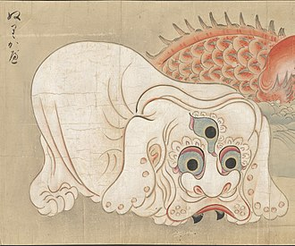
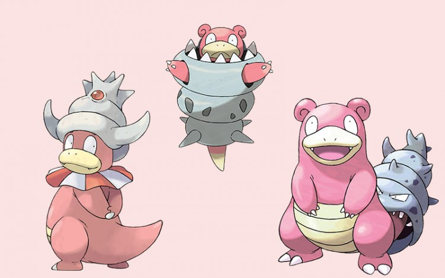
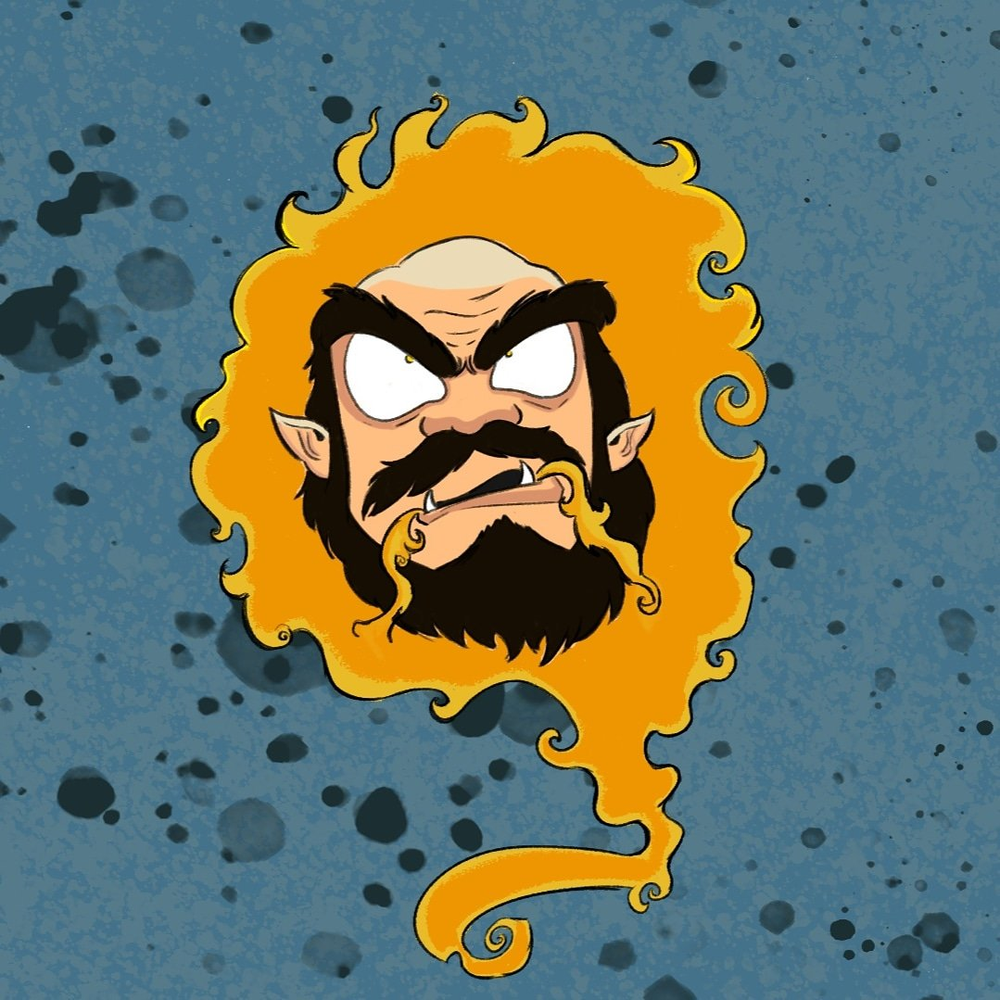
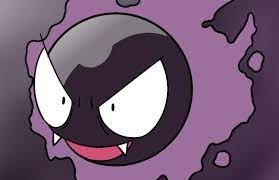
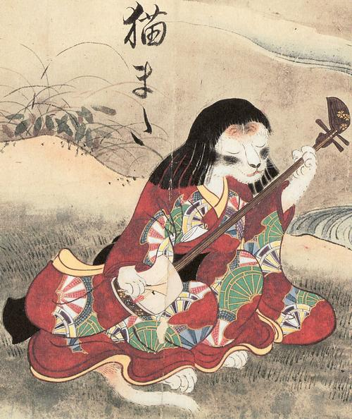
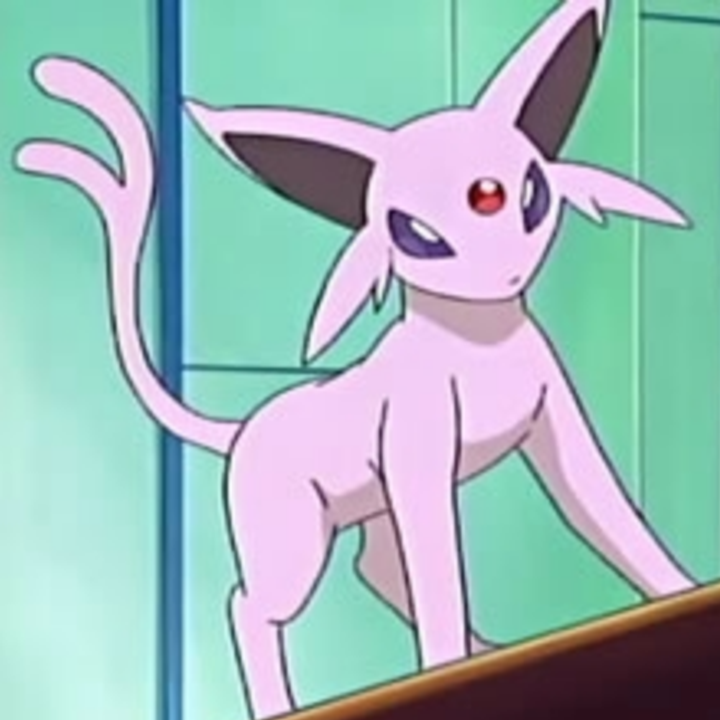
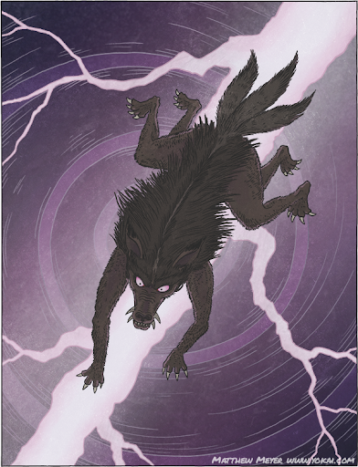
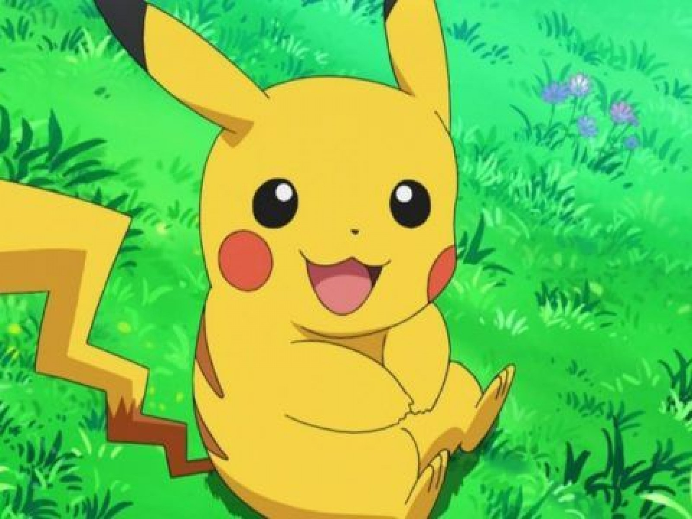

Austin Snyder
AMST 290
Curation on Yōkai & Pokémon
As part of my final project for AMST 290, I have curated several examples of the relationship between Yōkai and Pokémon, with particular focus on designs.
What are Yōkai?
In Japan, creatures of folklore have historically been referred to by a variety of terms—including mononoke, bakemono and obake—but most commonly today they are called yōkai. This word has become a 'catch all' for everything ghastly and spooky.
However, it is also important to note that not all yōkai are bad, or 'evil.' In fact, they are most often simply mysterious, and act as a haven for many legends and folklore!
What do they have to do with Pokémon?
A popular game, media, and even graphic novella phenomena, the Pokémon franchise is well-known for basing many of the designs of its titular creatures off recognizable, real-world things. Over the course of the 25 years since the release of the first Pokémon game, a wide variety of designs have been chosen for the creatures, including horses, dogs, venus flytraps, and even ice cream cones. However, it is less well-known that many designs are heavily influenced by yōkai.
From obvious design similarities to subtle in-game statistics and relationships, the world of Pokémon features numerous references to yōkai. The following is a curation and explanation of these references among selected members of the first 151 Pokémon created.
Curation
Sazae Oni & the Slowpoke Family

Often created when turban snails get old enough to shape shift, Sazae Oni (pictured left) are known for using their deceitful abilities to trick people in the water. Similarly, the Slowpoke evolutionary line (pictured right) are created through the bite of a shell that has come to life, injecting it with toxins that impact its physiology and brain chemistry. In the Pokémon world, this results in the addition of a Psychic typing to Slowpoke as it evolves, or "shapeshifts." Among Pokémon, having the Psychic type often denotes intelligence above that of people, as well as an affinity for trickery. This matches up quite well with the lore of Sazae Oni, but the Slowpoke line's more playful nature and appearance also reflect the Pokémon franchise's purpose of catering toward the curiosity and sociability of children. Consistent with other comparisons discussed in this curation, Pokémon has adapted yōkai to fit its desired narrative.
Sōgen Bi & Gastly


The fireball yōkai, Sōgen Bi, has its roots in a legend about a monk—specifically, one who lied, stole, and did a generally bad job at being a monk. As punishment, he was cursed to forever wander the earth, unable to pass on from this world. With obvious similarities in design, Gastly is also a corporeal will-o-wisp. Hinted at as being the soul of a Pokémon throughout in-game lore, Gastly is a Ghost-type Pokémon that wonders the earth with little control over its movement due to its gaseous state. However, once again differing slightly from the yōkai that inspired it, there is no evidence that Gastly is a human, Pokémon, or other character that is being punished. Apart from their similar origins, the artwork for Gastly is obviously inspired by Sōgen Bi, and many of the original in-game characters who used Gastly in battle held monk-like jobs.
Nekomata & Espeon


Nekomata, a type of bakemono, or "shapeshifter," yōkai, begins life as a simple cat. As the folklore story goes, however, if a cat disappears into the night as it nears old age, it has likely run off to the mountains. Once there, the cat's tail splits in two as it transforms into a bipedal, psychically-powered, fireball-summoning monster. Depicted as a pink, twin-tailed cat, Espeon is a powerful Psychic-type Pokémon that evolves from a rather cute, unassuming cat-like Pokémon by the name of Eevee. Through this evolution, or "shapeshifting," Espeon gains powers associated with the fire and the sun. However, it does not become a human-eating monster like the Nekomata, for similar reasons to those of the changes of the Slowpoke family and Gastly.
Raijū & Pikachu


Raijū, another type of bakemono, is known as a fierce pet of the Japanese god of thunder, Raikou. Often taking the forms of large felines and canines like lions or tigers, Raijū is a creature of mayhem and destruction, embodying lightning in its purest form. Although almost comical in its physical distinction from the small, meek-looking, Electric-type mouse Pokémon Pikachu, Raijū's abilities have surprising similarities to the franchise mascot. In direct reference to Raijū, the signature move and depiction of Pikachu’s evolutionary line involves becoming a “ball of lightning.” Additionally, the evolution of Pikachu brings about a slightly more intimidating Pokémon by the name of Raichu, adopting more of the mannerisms of Raijū in addition to its name.